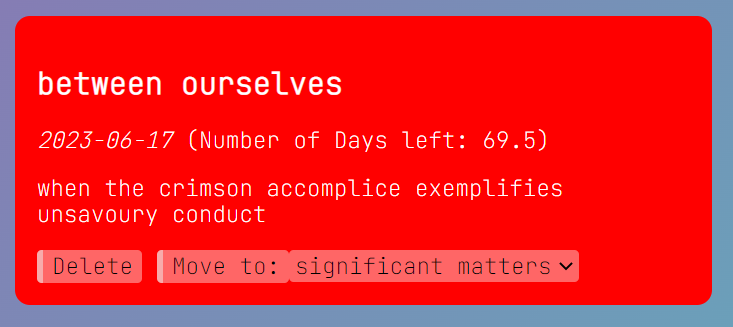

This is a browser app that allows you to store notes such that you can keep track of tasks and manage your productivity, or just to remind yourself of upcoming events. You can create a new note on the Notes page.
There is a variety of things you can do to your notes on this website. For example, you can set a title, colour, date, description text as well as the text colour which will be displayed in your note below the Notes dashboard. You can use these inputs to customise your note and give it a personal feel. With dates set in notes, you can see the amount of days till your big event. Don't worry, you will always be able to see your notes when you come back! In addition, notes will come with a delete button in case you don't need them anymore.
Below is an example of a note you can create with this app.
If you go to the Site Preferences page, you can customise the site as well! Right now you can only customise the background color gradient, but it's still pretty cool. Follow the instructions on that page to find out more.
Coding by me and design by me.